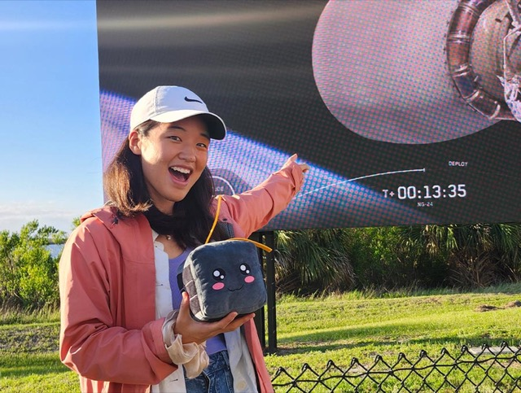
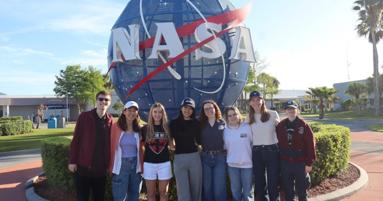
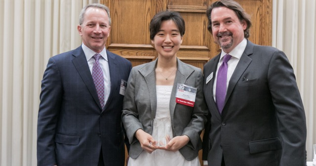
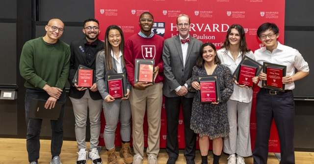

News
Press coverage and mentions.
-

The Hertz Foundation Travel Fund: Removing Barriers to Professional Growth -

Aerospace Collective celebrates satellite launch - Two Harvard students named 2025 Hertz Fellows
-

Grace Kim recognized by Aviation Week Network - Grace Kim — 2023 Top Ten Seniors in Innovation
- Senior profile: Grace Kim
-

Seven seniors honored with Dean’s Award for outstanding senior capstone projects - Harvard seniors head to U.K. as Marshall Scholars
- Three Harvard Seniors Awarded 2023 Marshall Scholarship
- Crimson … in … space!
- Engineering Better Eating Habits